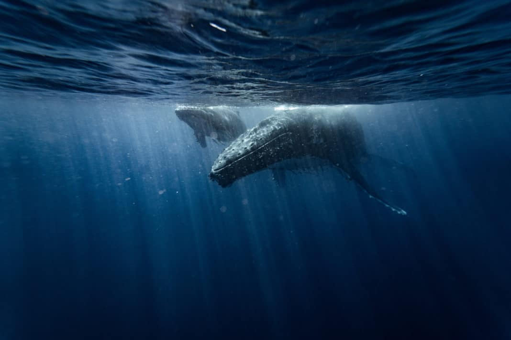

Berikut adalah beberapa dokumenter lain yang akan membuka mata kamu untuk masalah yang terjadi di dunia sekarang. Seaspiracy adalah salah satu yang banyak dibicarakan sekarang - berikut 7 dokumenter yang menantang kesalahpahaman umum tentang lautan kita dan penduduknya
David Attenborough: A Life on Our Planet
Dengan kecerdasan dan kehangatan yang khas, Sir David Attenborough kembali dalam pekerjaan penting ini yang ia gambarkan sebagai “pernyataan saksi”-nya. Serial ini menjalin melalui banyak aspek dalam kariernya yang luas mengamati upaya konservasi alam di seluruh dunia. Akibatnya, Anda akan dapat melihat berapa banyak yang telah hilang karena kerusakan yang ditimbulkan manusia di planet kita ketika dilihat melalui mata satu orang yang sangat peduli tentang kesuksesan masa depannya! Film dokumenter ini berbagi prediksi yang mengkhawatirkan untuk masa depan planet ini jika manusia menolak untuk mengubah perilaku mereka, tetapi juga menawarkan solusi yang menginspirasi dan mendesak untuk menyelamatkan masa depan kita.
Cara Menonton: Anda dapat menontonnya di Netflix.
Our Planet
Serial docu pemenang penghargaan Emmy ini adalah serial pertama Netflix yang masuk ke dalam pemrograman alam. Difilmkan oleh lebih dari 600 anggota kru selama empat tahun di 50 negara itu telah diriwayatkan oleh tidak lain dari Sir David Attenborough. Perbedaan kali ini, bagaimanapun, Planet Kita tidak menghindar dari ancaman yang dihadapi flora dan fauna yang digambarkannya tetapi sebaliknya memilih untuk menyinari apa yang dikatakan beberapa orang adalah keadaan darurat iklim yang akan datang.
Cara Menonton: Anda dapat menontonnya di Netflix.
Blackfish
Blackfish adalah salah satu film dokumenter yang paling kontroversial dan dibicarakan hingga saat ini. Film dokumenter ini secara harfiah memang mengubah seluruh budaya, tidak hanya di Amerika tetapi di seluruh dunia juga. Ini adalah tampilan penting pada paus pembunuh Tilikum, yang menghabiskan hidupnya tampil untuk SeaWorld Orlando sebelum ditutup karena kedekatannya dengan hewan lain yang mengakibatkan beberapa kematian.
Cara Menonton: Anda dapat menontonnya di Netflix.
Chasing Coral
Chasing Coral adalah film dokumenter yang mengikuti kehidupan para penyelam, ilmuwan, dan fotografer saat mereka melakukan perjalanan ke seluruh dunia untuk mendokumentasikan apa yang kita lakukan dengan terumbu karang. Saat Anda menonton film selama satu setengah jam ini perspektif Anda akan berubah dari memikirkan betapa indahnya ekosistem ini ketika tidak tersentuh oleh manusia menjadi ngeri pada tindakan kami terhadap mereka.
Cara Menonton: Anda dapat menontonnya di Netflix.
A Plastic Ocean
Samudra Plastik adalah film dokumenter yang sulit ditonton tetapi yang penting. Ini mencatat kehidupan air yang telah hilang karena ketergantungan kita yang terus tumbuh pada plastik dan apa yang dapat kita lakukan sekarang sebelum terlambat. Film ini mengikuti jurnalis Craig Leeson dan freediver juara dunia Tanya Streeter saat mereka berkeliling dunia mewawancarai para ahli, peneliti, penyelam, dan lainnya yang memiliki pengalaman pribadi dengan polusi laut agar lebih memahami bagaimana memecah plastik mempengaruhi kita semua - baik di atas air atau di bawah
Cara Menonton: Anda dapat menontonnya di Netflix, YouTube, atau Google Play.
The Cove
The Cove adalah film dokumenter yang wajib ditonton oleh pecinta hewan dan pecinta lingkungan. Menggunakan peralatan canggih, sekelompok aktivis - dipimpin oleh pelatih lumba-lumba Ric O’Barry dan termasuk freedivers Mandy-Rae dan Kirk Krack - menyusup ke teluk dekat Taijii, Jepang. Pelecehan mengejutkan terhadap hewan yang terungkap dalam film ini, dikombinasikan dengan ancaman terhadap kesehatan manusia membuatnya sulit tetapi perlu dilihat.
Cara Menonton: Anda dapat menontonnya di iTunes, Amazon, Google Play
Mission Blue
Suara narator menawan dan tidak pernah membuat pemirsa merasa bosan. Kisah Sylvia Earle, seorang eranografer, ahli biologi kelautan, dan ahli lingkungan yang telah mendedikasikan hidupnya untuk menyelamatkan lautan Bumi yang sekarat setelah melihat secara langsung berapa banyak mereka telah dikeringkan hanya dalam satu seumur hidup.
Cara Menonton: Anda dapat menontonnya di Netflix